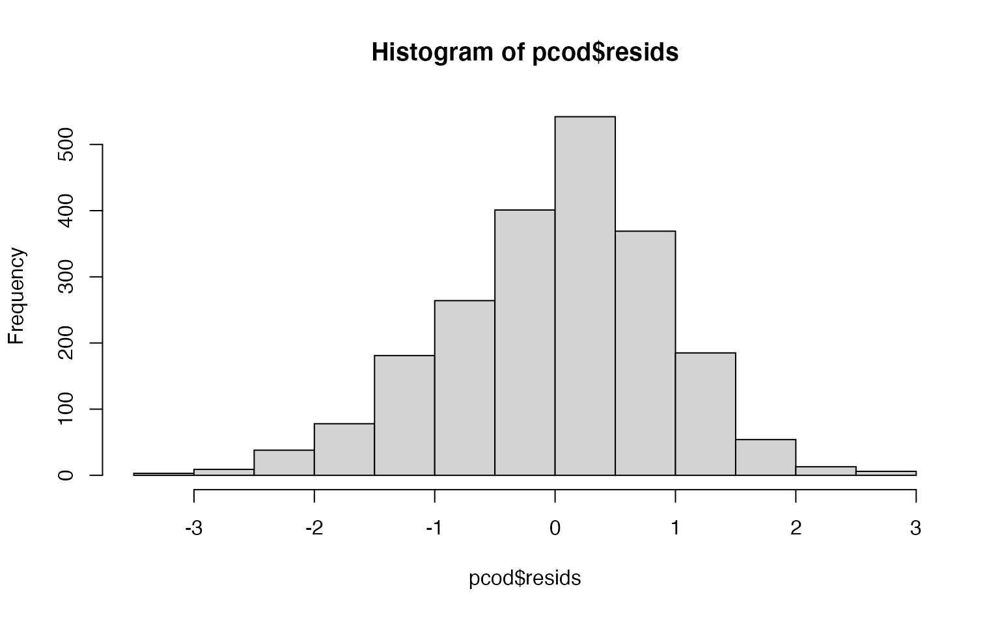
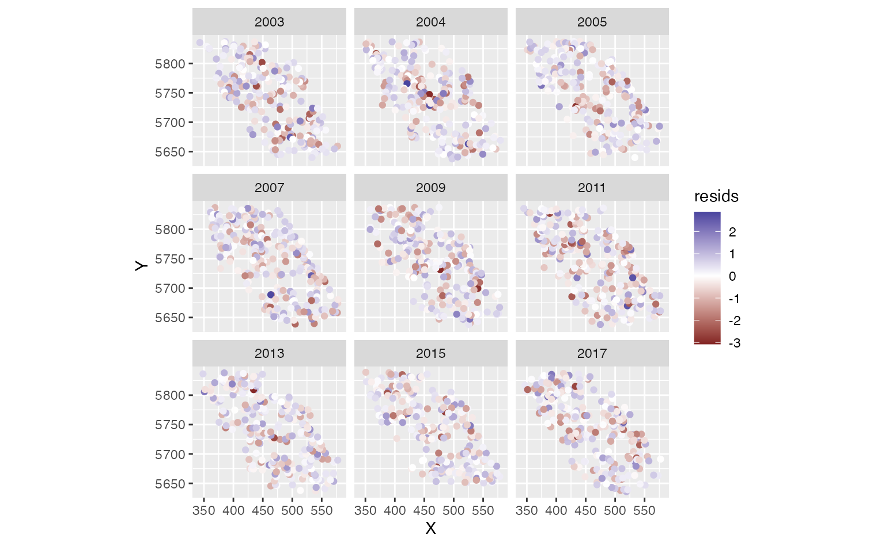

Index standardization with sdmTMB
2020-10-02
Source:vignettes/index-standardization.Rmd
index-standardization.RmdLet’s perform index standardization with the built-in data for Pacific cod.
- I’ve included columns for depth and depth squared.
- Depth was centred and scaled by its standard deviation and I’ve included those in the data frame so that they could be used to similarly scale the prediction grid.
- The density units should be kg/km2.
- Here, X and Y are coordinates in UTM zone 9.
glimpse(pcod) #> Rows: 2,143 #> Columns: 12 #> $ year <int> 2003, 2003, 2003, 2003, 2003, 2003, 2003, 2003, 2003, 2… #> $ X <dbl> 446.4752, 446.4594, 448.5987, 436.9157, 420.6101, 417.7… #> $ Y <dbl> 5793.426, 5800.136, 5801.687, 5802.305, 5771.055, 5772.… #> $ depth <dbl> 201, 212, 220, 197, 256, 293, 410, 387, 285, 270, 381, … #> $ density <dbl> 113.138476, 41.704922, 0.000000, 15.706138, 0.000000, 0… #> $ present <dbl> 1, 1, 0, 1, 0, 0, 0, 0, 0, 1, 0, 0, 0, 0, 0, 0, 0, 0, 0… #> $ lat <dbl> 52.28858, 52.34890, 52.36305, 52.36738, 52.08437, 52.09… #> $ lon <dbl> -129.7847, -129.7860, -129.7549, -129.9265, -130.1586, … #> $ depth_mean <dbl> 5.155194, 5.155194, 5.155194, 5.155194, 5.155194, 5.155… #> $ depth_sd <dbl> 0.4448783, 0.4448783, 0.4448783, 0.4448783, 0.4448783, … #> $ depth_scaled <dbl> 0.3329252, 0.4526914, 0.5359529, 0.2877417, 0.8766077, … #> $ depth_scaled2 <dbl> 0.11083919, 0.20492947, 0.28724555, 0.08279527, 0.76844…
First we will create our SPDE mesh. We will use 100 knots for a balance between speed and accuracy in this vignette. You will likely want to use more for applied scenarios. You will want to make sure that increasing the number of knots does not change the conclusions.

Let’s fit a GLMM. Note that if we want to use this model for index standardization then we need to include 0 + as.factor(year) or -1 + as.factor(year) so that we have a factor predictor that represents the mean estimate for each time slice.
m <- sdmTMB( data = pcod, formula = density ~ 0 + as.factor(year), time = "year", spde = pcod_spde, family = tweedie(link = "log"))
We can inspect randomized quantile residuals::

ggplot(pcod, aes(X, Y, col = resids)) + scale_colour_gradient2() + geom_point() + facet_wrap(~year) + coord_fixed()

Now we want to predict on a fine-scale grid on the entire survey domain. There is a grid built into the package for Queen Charlotte Sound named qcs_grid. Our prediction grid also needs to have all the covariates that we used in the model above.
glimpse(qcs_grid) #> Rows: 65,826 #> Columns: 6 #> $ X <dbl> 456, 458, 460, 462, 464, 466, 468, 470, 472, 474, 476, … #> $ Y <dbl> 5636, 5636, 5636, 5636, 5636, 5636, 5636, 5636, 5636, 5… #> $ depth <dbl> 347.08345, 223.33479, 203.74085, 183.29868, 182.99983, … #> $ depth_scaled <dbl> 1.56081222, 0.56976987, 0.36336929, 0.12570465, 0.12203… #> $ depth_scaled2 <dbl> 2.436134789, 0.324637708, 0.132037240, 0.015801658, 0.0… #> $ year <int> 2003, 2003, 2003, 2003, 2003, 2003, 2003, 2003, 2003, 2…
Now make the predictions on new data:
predictions <- predict(m, newdata = qcs_grid, return_tmb_object = TRUE)
Let’s make a small function to make maps.
plot_map <- function(dat, column) { ggplot(dat, aes_string("X", "Y", fill = column)) + geom_raster() + facet_wrap(~year) + coord_fixed() }
There are four kinds of predictions that we get out of the model. First we will show the predictions that incorporate all fixed effects and random effects:
plot_map(predictions$data, "exp(est)") + scale_fill_viridis_c(trans = "sqrt") + ggtitle("Prediction (fixed effects + all random effects)")

We can also look at just the fixed effects, here depth:
plot_map(predictions$data, "exp(est_non_rf)") + ggtitle("Prediction (fixed effects only)") + scale_fill_viridis_c(trans = "sqrt")

We can look at the spatial random effects but represent consistent deviations in space through time that are not accounted for by our fixed effects of depth. In other words, these deviations represent consistent biotic and abiotic factors that are affecting biomass density but are not accounted for in the model.
plot_map(predictions$data, "omega_s") + ggtitle("Spatial random effects only") + scale_fill_gradient2()

And finally we can look at the spatiotemporal random effects that represent deviation from the fixed effect predictions and the spatial random effect deviations. These represent biotic and abiotic factors that are changing through time and are not accounted for in the model.
plot_map(predictions$data, "epsilon_st") + ggtitle("Spatiotemporal random effects only") + scale_fill_gradient2()

When we ran our predict.sdmTBM() function, it also returned a report from TMB in the output because we included return_tmb_object = TRUE. We can then run our get_index() function to extract the total biomass calculations and standard errors:
# not bias correcting for vignette-building speed: ind <- get_index(predictions, bias_correct = FALSE)
# scale the biomass by the area and adjust units; scale <- 2 * 2 / 1000 # 2 x 2 km grid and converted from kg to tonnes ggplot(ind, aes(year, est*scale)) + geom_line() + geom_ribbon(aes(ymin = lwr*scale, ymax = upr*scale), alpha = 0.4) + xlab('Year') + ylab('Biomass estimate (metric tonnes)')

These are our biomass estimates:
mutate(ind, est = est * scale, lwr = lwr * scale, upr = upr * scale, cv = sqrt(exp(se^2) - 1) ) %>% select(-log_est, -max_gradient, -bad_eig, -se) %>% knitr::kable(format = "pandoc", digits = c(0, 0, 0, 0, 2))
| year | est | lwr | upr | cv |
|---|---|---|---|---|
| 2003 | 749 | 551 | 1016 | 0.16 |
| 2004 | 1487 | 1160 | 1906 | 0.13 |
| 2005 | 1394 | 1001 | 1941 | 0.17 |
| 2007 | 339 | 249 | 462 | 0.16 |
| 2009 | 554 | 408 | 752 | 0.16 |
| 2011 | 993 | 774 | 1275 | 0.13 |
| 2013 | 1105 | 825 | 1481 | 0.15 |
| 2015 | 1174 | 891 | 1546 | 0.14 |
| 2017 | 550 | 394 | 766 | 0.17 |